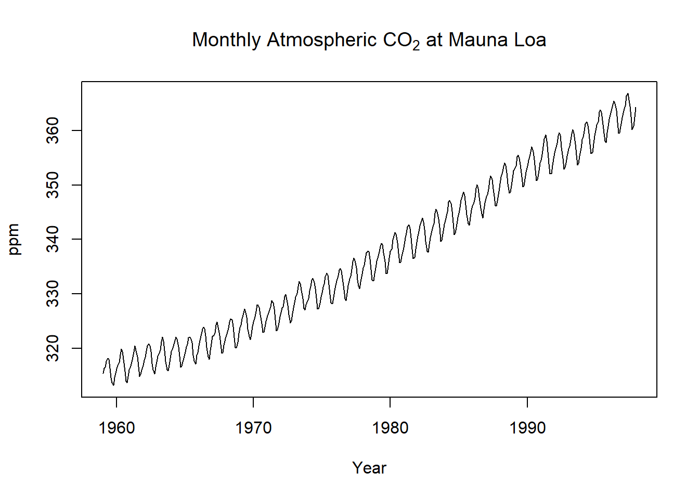

Enviornmental Calculus - Active Learning with Case Studies
2025-06-16
Chapter 1 Why Calculus for the Environment?
Welcome to Calculus for Environmental Science. This book was designed to help you explore the natural world using the tools of calculus—especially the powerful ideas of change and accumulation.
1.1 Why This Book?
Environmental scientists face some of the most urgent and complex problems of our time: climate change, biodiversity loss, resource management, and pollution. Calculus helps us:
- Predict how systems change over time
- Estimate impacts and risks
- Model natural and human systems using differential equations
- Analyze rates of change and long-term accumulation
Throughout this book, you’ll work with real data, learn visual and conceptual approaches, and build skills that matter for sustainability.
1.2 What Is Calculus?
Calculus is the mathematics of change (derivatives) and accumulation (integrals). For example:
- The rate of CO₂ increase in the atmosphere is a derivative.
- The total added CO₂ over a year is an integral.
We’ll build your understanding of these ideas with environmental data and graphical tools.
1.3 How This Book Works
Each chapter includes:
- Brief concepts and explanations
- Environmental case studies
- Guided R code and plots
- Practice problems and reflection prompts
You’ll need R and RStudio. No prior coding experience is assumed.
1.4 Getting Started with Data
Let’s look at atmospheric CO₂, one of the most important environmental time series.
1.4.1 Load and Plot Mauna Loa CO₂ Data
# Load base dataset (built-in monthly CO₂ from Mauna Loa)
data(co2)
plot(co2,
main = expression("Monthly Atmospheric CO"[2] * " at Mauna Loa"),
ylab = "ppm",
xlab = "Year")
This plot shows CO₂ concentrations increasing over time. In later chapters, we’ll explore:
- The rate of increase using derivatives
- The total extra CO₂ using integrals
- How to model this trend using differential equations
1.5 Your Toolkit
You’ll learn to use:
- R + RStudio (free and open-source tools)
- Graphing, interpreting, and simulating environmental change
- Mathematical problem-solving with a real-world focus
1.6 Looking Ahead
By the end of this course, you’ll be able to:
- Apply calculus concepts to natural systems
- Analyze environmental data with confidence
- Interpret and communicate your results
install.packages("bookdown")
# or the development version
# devtools::install_github("rstudio/bookdown")Remember each Rmd file contains one and only one chapter, and a chapter is defined by the first-level heading #.
To compile this example to PDF, you need XeLaTeX. You are recommended to install TinyTeX (which includes XeLaTeX): https://yihui.org/tinytex/.